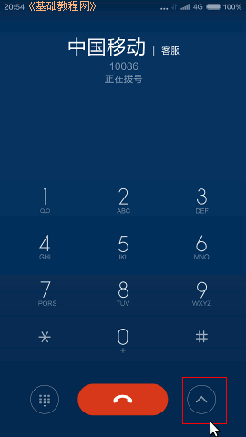
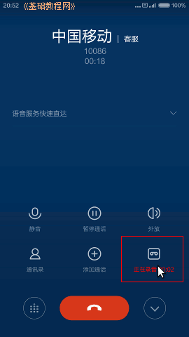
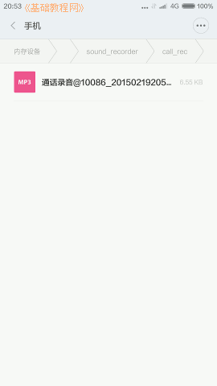
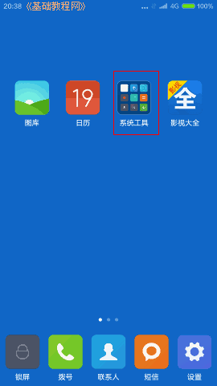
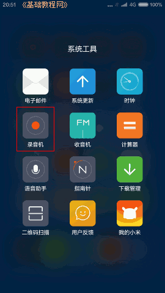
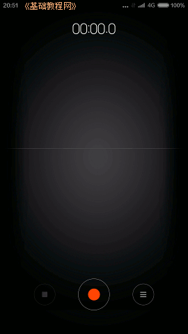
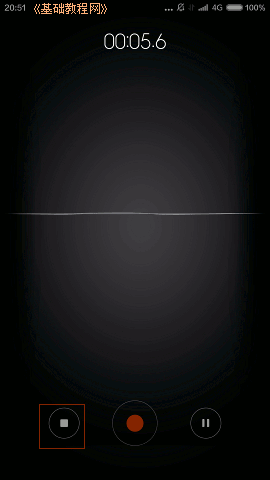
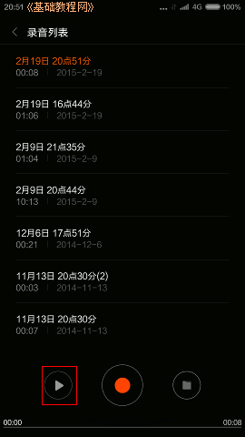
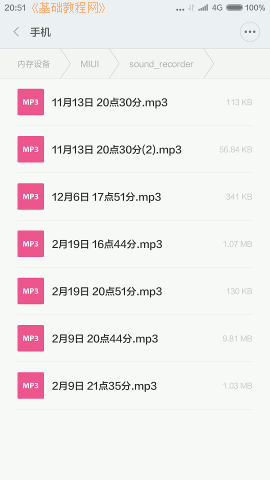

小米4手机操作指南玩家手册
作者：TeliuTe 来源：基础教程网
十三、录音机 返回目录 下一课可以录制通话录音，也可以普通录音；
1、录音机
1）拨打电话时，点按通话按钮旁边的工具按钮，显示工具选项；

2）点按“录音”按钮，显示“正在录音”提示，开始录音；

3）结束通话后，提示录音通知，点击打开存储的录音文件，点按可以播放；

4）普通录音机，点按桌面上的“系统工具”文件夹；

5）点按“录音机”图标，打开录音界面；

6）中间红色圆按钮是录音按钮，左边是停止按钮，右边是录音文件列表；

7）点按录音按钮后开始录音，上面显示走动的时间，点按左下角停止按钮，停止录音，右边是暂停录音；

8）停止后，点按右边的文件列表按钮，显示录音文件，选择后可以点左下角的播放按钮；

9）长按文件列表按钮，可以打开存放录音文件的磁盘位置；

本节学习了录音机的基础知识，如果你成功地完成了练习，请继续学习下一课内容；
本教程由86团学校TeliuTe制作|著作权所有
基础教程网：http://teliute.org/
美丽的校园……
转载和引用本站内容，请保留作者和本站链接。